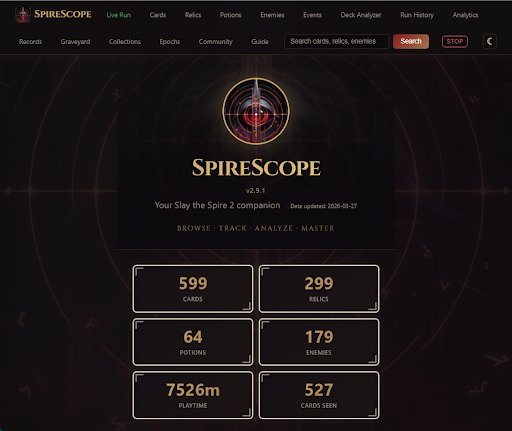
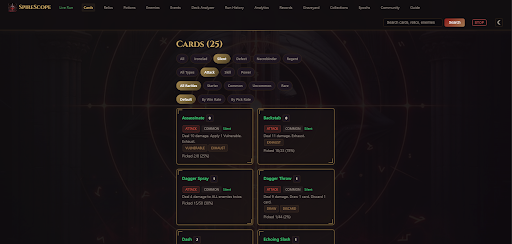
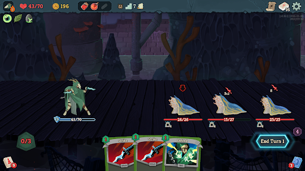

No cloud. No accounts. No telemetry. Runs entirely on your machine.
Download for WindowsOpen source · MIT License · View on GitHub
Browse all cards, relics, potions, enemies, and events with filters, search, and strategy guides.
Real-time dashboard via SSE. Deck, HP, synergy hints, danger alerts, counter-cards.
Win rates, death heatmaps, card pick timing, boss matchups, archetype detection, gold economy.
Card browser, enemy guides, and strategy guides work without any save files or game install.


